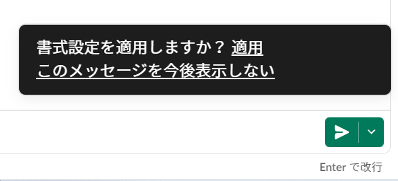

Slack->Notion変換はこちらから
Notion -> Slack 変換
このサイトの使い方
1. Notion上で作成したスケマネだよりをコピー
2. 左側のテキストボックスに貼り付けて変換
3. 右側のテキストボックスに出た文章をNotionに貼り付け
4. 画像に示す「適用」をクリック

※もし、「適用」が出ない場合は「Ctrl + Shift + F」を一緒に押す
これを使うメリット
- SlackからNotionに変換する場合に比べて以下の項目の編集する必要が無くなります
- （殆どの）スタンプの編集が要らないです
- 太字、コードブロック、引用符の追加
- スタンプコピー対策済みなので、削除が楽になります（スタンプの位置に「＄」が入ってます）
※もしNotionでもスタンプを挿入したい場合は「/emoji」と打てば挿入できます
注意事項
- タイトル、バリュー設定、画像挿入は各自でお願いします
- 太字、コードブロック、引用符は手動で追加して下さい
- Notion -> Slack は対応してないです（今後作成予定）
- スケマネバリューのスタンプが使えないので修正して下さい
- URLはNotionの機能で貼り付けた方が綺麗になります
- 半日で作った突貫品なのでバグが起きる可能性大
※問題や要望が有ればシロクマのたいちゃんの方に連絡下さい！